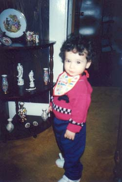
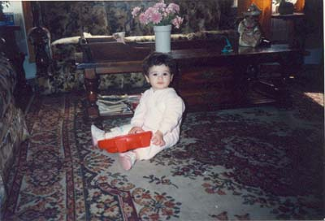
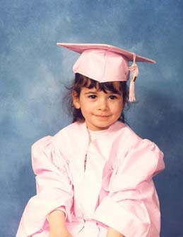
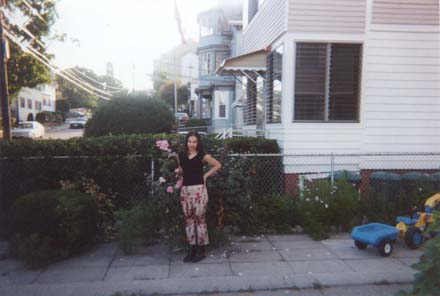

| susan at 2 years old | susan in home at 2 years old | |
 |
 |
home
|
| susan graduating preschool at 4years old | susan at 13 years old chillin at cousin's crib | |
 |  |
Hi! Since this page is all about me let me tell you a little about myself,my name is Susan I am 13 years old and was born and raised in RhodeIsland.I am going to enter the 9th grade this fall and I can't wait! I am in the artemis project.This program is just for girls scince there aren't many women in the computer science field.I made this website in this program and have learned how to do many interesting things with computers that I never thought I would have a chance to do. This program has given me a different perspective about computers and I can see myself working with computers in the future.I'm also interested in singing and playing ball.My dream is to one day become a professional singer and make my own CD. Well anywayz I hope you like my website as much as I do. PEACE!!!